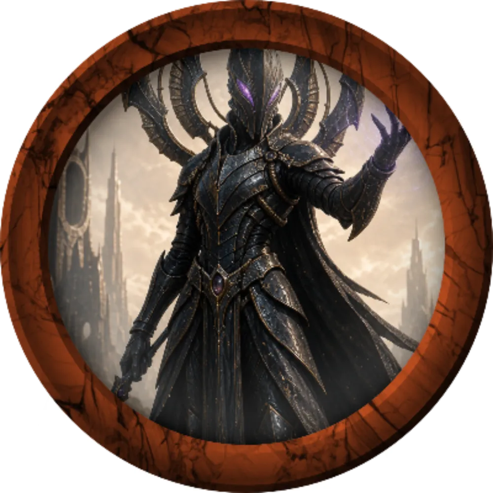

앨리안이 죽고
그 후임으로 러스티가 공표되었다는 소식을 듣습니다.
길거리를 지나가는데 사람들이 모두 앨리안에게 배신당했다고 생각하며 그를 욕하는 말을 하는 것을 들을 수 있습니다

"끄응.."

"뭔가 꿍꿍이가 있을 줄 알았지"


"그런 녀석들은 믿을게 못된다"

ㅁ
일정
토일 아니였어요?
초님이
하셨던거 같은데
아니였나
그 위에 보면
그런줄 알았지!
세상에나..
마지막 문장만 봄
그래도 이해할 수 잇게 전부 전달했음 ㅡㅡ
Long Rest (8 Hours, New Day)
1
죄송합니다
어쨌든
말이 한번 바뀐거라
햇갈렸네요..
그러면 왈든 내부에서도 슬슬 강경론이
올라오는 것이 보입니다
(전에 싸웠던 사람이라)
(눈치)
"마녀한테도 자신의 부하를 내줬다는 말 들었소?"
"출신지가 그쪽이라 계속 그 쪽에 마음이 가나보군!"

"지금에야 말로 공격해야하는거 아닌지"
"싸우자는게 강경파인듯 하네요오"
"아시잖아요"
"이 전쟁을 조기에 종식시킬 기회 아닌가?"
"하흐란이 무슨 짓이라도 꾸미고 있다면 다음엔 몰살일 수도 있네!"
아르셀리아의 말에 모두가 물음표를 띄웁니다
"분명 발표되기로는 그 키시암가의 악마가 우리를 배신했고 차남이 그 음모를 알아차리고 악마의 목을 베었을텐데?"
누가했었나요?
우릴 배신했다고 발표해버리면
일단 확인
라스티 말 들어보죠

"여러분은 '진실'을 알고 있는 사람들이죠"
"이해는 해"
"여러분도 처음에 그를 많이 의심했지요? 의혹은 그의 삶을 통틀어서 언제나 함께 있었답니다."
"저주에 대해 잘 알았다면 뭔가 달라졌을까요"
"감정적이네요. 죄송합니다."
"그녀와 오랜 기간 함께 있었지만.. 그런 일을 꾸몄다니"
"저는 그녀가 앨리안을 시기한다는 말을 들어본 적이 없어요. 이건 .. 뭔가 이상한 일입니다."
"오히려 긴 시간 동안.. 그 반대였습니다."
"하지만.. 옆에 있는 사람마저 파악할 수 없는 정밀하고 강력한 지배.. 들어본 적 있습니다."
".... 어쩃든.."
"이번 일이 끝나면 제가 엘리안의 불명예를 씻어주겠다고 맹세하겠습니다."

".... 아뇨 일단은 하흐란과의 일을 마무리짓겠습니다."
"저는 개인적으로 '앨리안'의 이상을 들어주고 싶어요."
"구체적인 방법론에는 동의하지 않지만, 적어도 그 이상 만큼은 평가해줄만한게 있다고 생각합니다."
"라스티"
"아니"
"지휘부"
"강건파, 온건파"
"둘중 어느쪽의 방식을 고려중인지"
"특히 마을에 큰 피해를 입었던 코볼트들은 완전히 강경한 주장을 펼치고 있으니까요"\
"그래서 저는 이렇게 하고자 합니다."
"엘프 순찰대들이 그들의 전초기지로 보이는 곳을 발견했습니다. 아무래도 그들의 지상 작전에서 가장 큰 역할을 하는 곳으로 보입니다."
"그곳을 공격해서 승기를 잡는다. 그리고..."
"승기가 확실해지면 저는 온건파가 나설 여지가 생길거라 생각합니다."
"...."
"아뇨"
"다릅니다."
"전쟁을 끝내기 위해서 잠깐의 '구류'만 있을겁니다
"적어도 그 때는 다른 방법이 생길겁니다."
"제 발언권을 높여줄겁니다.. 비겁하게도 말이죠"
"... 적어도 "
"하흐란을 설득시킬 수는 없다 해도"
"승전은 우리 내분을 막아주고 제가 다음에 뭔가를 할 여력을 만들어줄 것입니다"
"차라리 비겁하다고 비난을 하시지요! 저도 아니깐"
"하지만 이 방법 밖에 없는걸.. 어떻게 합니까"
"지휘부중 두명이나 빠져버리니"
"휘청이는것도 이해해"
"승기를 잡으려면"
"너가 말한 그 방법을"
"실행하려면.."
"쯧.. 쉽진 않겠네"
"그게 너의 결정이라면"
라며 조만간임을 말하지만 사실 pl 입장에서는 당장일겁니다
@카드를 섞고 있습니다
@내색은 안했지만
@아르셀리아도 이건 좀 찝찝한거 같네요
"코볼트 마을건 등만 봐도"
"녀석들의 방침은"
"군인과 민간인을 가리지 않는 몰살"
구류한다는 뜻입니다
"냉정하게 생각하면 우리가 못할 이유도 없는 건가...(망설임, 찝찝함)"
(아마 방어조 때 몇 죽은 사람 중에 자기 할머니 있었으면 대번에 찬성하고 복수귀 모드가 됐을지도?ㅋㅋㅋ
아놔 아니거든요 ㅠ
하고 있는 상황에서
강경파쪽입니다
"강경파의 분노심을 자극하기 위한 수작이거나"
정확히는 그들을 살려두기 위해서
같이 입혀둔 유지 장치쪽인 것 같습니다
Guidance
조사
24
"물건 압수도 못해"
"슈트 자체에서 터진건지"
"적어도 이대로 두면 안될거 같은데"
여러분은..
갖가지 트러블로 답답함을 느낍니다
며칠 후 , (사실 pl입장으로는 거의 당장)
왈든 연합체는
뭐하지
ㅋㅋ
누가
자작극
벌인 가능성이
보여요
(아직이 왜붙죠?)
너무 긴 합의과정을 거쳐야해서 시간 없어서 못했습니다 ㅋㅋㅋㅋ
할다론도 어떤 면에서는
(아니근데 왜그걸로 서술하세욬ㅋㅋㅋㅋㅋㅋㅋㅋㅋㅋㅋ)
(사실 로웬도 강경파긴해요 냅두면 불안하니까..)
감지
10
개별로 보기에
모든 하흐란이 다 적이라곤
생각안하기는 하는데
당장 적대적이면 처리하자는 생각
흔히 말하는 기회주의적 마인드
그게
밥은 먹고 다니나
설마
전초전에서
죽은 엑스트라1이진 않을까
걱정되긴 하네요
약간 화해의
초석이 될 수도 있는 친구라
ㅋㅋㅋㅋㅋ
False Life
피해: 7
할다론 미스바르 우선권
11
고개를 까딱
1d20
1
지능 내성
12
@불안
왈든은 분명히 평범한 마을이었는데
요 몇번의 전투가 그들에게 자신감을 심어줬는지
제법 그들은 용감해졌습니다
"한끗차이지"
"..."
"저중 몇이나 살아남을지는"
@혀를 찹니다
감지 굴려주세요
Guidance
감지
27
갑자기 주변에 걸어오던 병사들이
감지
21
"무슨 일이야!"
Gem of Seeing
그러면..
그 보이는 곳에서 어둠속에 감춰진 무언가가 보입니다
Cure Wounds
피해: 25
"어둠속에 적이다"
주문인지 뭔지 등으로 모습을 감추고
아군을 공격하고 있습니다
"암습을 반복하는군"
"전투 준비!"
See Invisibility

그 어둠속에서 튀어나온 것은
어둠속에서 완전히 모습을 감추고
니콜라스 크라프트 우선권
10
아르셀리아 우선권
16

하흐린 전사 우선권
13
하흐린 전사 우선권
7

하흐란 제노맨서 우선권
24
로웬 우드워드 우선권
11
쿵! 정신의 충격이 여러분 머리에서 느껴집니다
죽음 내성
17
지능 내성
13
지능 내성
8
Mind Blast
DC 15 : 내성 굴림 : 내성 굴림 : 내성 굴림 : 내성 굴림
피해: 23
지능 내성
14
Psi Blade
로웬 우드워드로웬 우드워드 AC: 15
피해: 8 + 6
Psi Blade
니콜라스 크라프트니콜라스 크라프트 AC: 16
피해: 7 + 7
죽음 내성
7
챗모듈 꺠ㅑ졋다
끄고옴
전멸인가
(오늘따라 잘때리네
시작 배치는
하게 해줘야 했음!
한다고 말했으면 하게 해줬을듯
ㅋㅋㅋ
1라운드에 배치 하게 해줬어야했음!
이거는 좀 아닌듯..
첨부터
(이니시를 못굴린 탓을 해야지;;;;
스턴
(2라운드 제노맨서 종료까지
(얘 턴 종료하니깐
(바로 효과에서 제거됨 ㅋㅋ
중독
(니콜라스 소환이라던가
Psi Blade
할다론 미스바르할다론 미스바르 AC: 15
피해: 5 + 4
Psi Blade
할다론 미스바르할다론 미스바르 AC: 15
Mind Blast 재충전
6
1d6
6
Psi Blade
할다론 미스바르할다론 미스바르 AC: 15
Telekinetic Bolt
할다론 미스바르할다론 미스바르 AC: 15
피해: 16
여러분은 꺠져가는 정신 속으로
여러분은 물론 주변을 신경쓸 겨를도 없지만
다른 하흐란들에 의해서 다른 병사들이 죽어나가는 소리도 들립니다
Telekinetic Bolt
아르셀리아아르셀리아 AC: 19
피해: 17
Mirror Image

표 Wild Magic Surge에서 결과를 뽑습니다.
76
Psi Blade
니콜라스 크라프트니콜라스 크라프트 AC: 16
피해: 6 + 8
Misty Step
죽음 내성
4
죽음 내성
7
Misty Step
Psi Blade
아르셀리아아르셀리아 AC: 19
Psi Blade
아르셀리아아르셀리아 AC: 19
Shield
표 Wild Magic Surge에서 결과를 뽑습니다.
16
Misty Step
현재를 먼저 보죠
표 Wild Magic Surge에서 결과를 뽑습니다.
35
언제 저까지 갔어
내턴이 아니구나
그럼 맞아요
잠깐 조명 밝힘
Telekinetic Bolt
아르셀리아아르셀리아 AC: 24
3d6
13
Telekinetic Bolt
아르셀리아아르셀리아 AC: 24
Misty Step
이탈
행동으로
질주
네
그 이후로는
하흐란의 완전한 독주에 가까운 전투가 벌어집니다
혼자서 저걸 어떻게 이겨
아르셀리아는 달아나면서
1d100
39
하흐란의 진짜 정예병들로 보입니다
그런데.. 당신은...
가기 전에 무언가를 목격합니다
(진짜 이렇게 될 줄이야
"?"
"저건 뭐지?"
완전히 압도하는 존재감을 가진 무언가가
저 하흐란 마을로부터 보입니다
그러면.. 이 일련의 과정이 지납니다
할다론과 로웬 니콜라스는.. 정신을 차리자
그대로 좀 떨어진 초원에서 정신을 차립니다
그리고 정신에 깃든 충격은
여러분에게 무언가를 전하려는듯
머리가 아파옵니다

"항복도 받지 않고 그 어떠한 제안도 거부한다"
"우리는 일방적인 도륙을 할 것이며"
"일주일 남은 목숨을 "
"부질없는 시간을 보내며 "
Goodberry
하나씩 먹입니다
하지만 더 강대한 존재가 존재했고
"우리가 이길 확률이야"
"그녀석보다도 강한 녀석이"
"별동대 수준인"
여러분은.. 러스티에게 보고하러 갑니까?
하지만 상태가 좋지않아 비틀거리며
보고하러 갑니다
들었던 그 문장을
"... 아무런 이익이 안되는 문장.."
그러면 자리에서 일어나서
"아르셀리아씨.. 달아나서는 안됩니다"
"저들이 확인사살을 안 하고 갔기에 다행이지"
"일주일이라는 기간을 제시하고"
"근거는?"
"물증은 있나?"
"우리들의 목숨을 바칠"
"합당한 근거는?"
".... 제 판단이 맞다는 "
"믿음 하에"
그러면 팔이 파르르 떨립니다
"5일 이내로"
"... 알겠어요...."
"반드시 방법을 찾아보죠"
"사망자는 어쩔 수 없고"
"부상자중에 중요한 사람들이 있어"
"우선.. 재정비가 먼저겠네"
하아 이 타이밍이군
어쩔 수가 없다
마을이 공포와 혼란으로
뒤섞여있을 때
아르벨은 혼자서 건물을 나갑니다
뒤따라갑니다
아르벨은 입을 엽니다
"방법 같은건 없어 알잖아."
"지금으로써는 기적을"
"구원을 바라는 수 밖에 없는거 같네"
@카드를 몇장 뽑습니다
@조커가 3개 뽑힙니다
"외곽으로 나가겠다고"
"도와줘"
@저벅저벅
@가까이 가서
"좋아"
"후.. 정말이지"
"그 팬던트에 대해"
"알던자가 있었어"
"도덴"
"그 자에게 가면 뭔가를 알아낼 수 있지 않을까?"
다른인원들도
다 부릅니다
로웬의 현재 상태는 어떻지요?
그러면 여러분을 보고 짤막하게 말합니다
"약속을 했어"
"떠나는걸로"
"남아있고 싶은 자들은.. 이대로 두면 전멸할테지"
"그러니 뭐라도 해봐야지"
"안되면 최대한.."
고개를 끄덕입니다
"..."
"이 팬던트의 진정한 힘을"
"찾는다"
"단서는"
예전의 모습이 생각나지 않을 정도로
"너희는 날 믿고있어?"
"나는 이런 목걸이 같은거 조금도 믿고 있지 않아"
"자신을 믿는거야"
그러며 말을 삼키고 말합니다
"최대한 빠르게 크로스로드로 가서"
"쥬덴에게 도움을 요청하는거야...!"
"잘도 도와주겠네"
"러스티도 쥬덴에게 도움을 요청하는 것은 못해"
"하지만 유일한 카시암인 나라면.. 나라면 그에게 가문의 이름으로 부탁할 수 있어"
"비록 키시암 가문이 쥬덴에게 복속되겠지만"
"거절당했을때"
"어떻게 할건지"
"운명을 남에게 맡기지 마"
"적어도 하흐란과의 전면전보다는"
"가능성이 높을거야"
"근데 말이야"
"안될 가능성도 있다는 소리야"
라며 목걸이를 보여줍니다
"그리고 쥬덴은 하흐란을 비롯한 그 모든걸 증오한다고 들었어"
"개입하지 않은 이유도"
"키시암의 도움 요청이 없어서일거야"
"...."
"내가 한번만"
"살펴봐도 될까?"
만약에 당신이 이 물건을 다시본다면 절대 오인하지 않을 것 같습니다
"그래도 이게 진짜라는건 알겠어"
"이걸 바쳐서 거래를 해보겠다는거지"
"사용법을 알아내려던건 포기한거야?"
"파멸이라고 불리던 그 망치도"
"분명히 강했지만.."
"도덴을 만나러 가보는것도 방법일거야"
여러분은 차남의 부탁을 들어줄 수도 있고
안들어줄 수도 있습니다
그리고 그게 뭐가되었든 이 행동은 러스티가 안좋아할겁니다
이 행동을 맘에 안들어할거같으면
도덴은 만나고 가는게
낫지 않나?
괜히 저 팬던트 첫 등장 세션때
나온게 아닐틴데
'그 현자': 아르벨에 의해 아젤라이넨의 유물의 힘을 사용할 수 있게 해주는 사람으로 언급 됨.

전에 그 빡빡이 말 믿고간거라
얘네도 더 안간거임
우리 뒤통수침
전문가를 만나보죠
물저장소에 있지 맨날
그러면..
"여러분을 보고 말합니다
"상황이 안좋다고 들었어요"
"그에 비해 우린 오합지졸이고"
"이 목걸이에 대해서 아는게 있는지 물어보려고 온거야"
"그 때의 저는 야생마법을 사용한 "
"마공학 무기를 제작중에 있었죠"
라며 기빨린 니콜라스를 바라봅니다
라고 말하며 그것을 만집니다
"전 이걸 항상 보고 싶었죠"
"제 감상 따위가 듣고싶은건 아니겠죠"
"..."
"결론부터 말하자면 완전한 개방은 지금은 무리입니다."
"하지만 불완전한 개방이라면 가능할지도 몰라요"
"하지만 이 팬던트 하나로 전황을 바꿀 수는 없을겁니다."
"도움은 되겠죠"
"하지만 키시암은 이것을 하흐란과 싸우기 위해서 만들었고"
"..."
"그런겁니다"
"아마도... 그렇겠지요"
"흐음"
"라스티도 방법을 찾고 있으니"
"합친다면 방법이 있을까?"
"불완전한 개방이라도"
"해봐야겠네"
"교섭할 재료가 사라져버려"
"아예 방법이 없는게 아니야"
라고 말하며 니콜라스를 바라봅니다
"반지.. 하나만 만들어주지 않겠어?"
"여기에 저랑 아르셀리아씨 보다 야생마법에 능통한 사람은 없어요"
니콜라스는 순간 거기서 어떤 의미를 이해하 수 있습니다
귀족들끼리 자신의 신원용으로 사용하기도 합니다
그리고 그것을 타인에게 바친다는 것은 자신의 신병을 준다는 의미기도 합니다. 반대로 그런 의미기에 결혼용으로도 쓰는겁니다
"앨리안..."
"팬턴트에 손상이 가겠죠"
"아마 성공률은 반반일까요?"
그러면 아르셀리아를 바라보며 말합니다
행운의 기운을
불어넣어보려 합니다
네
가능